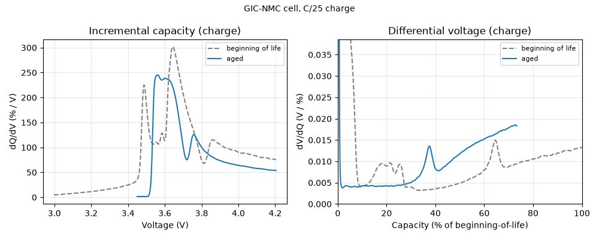
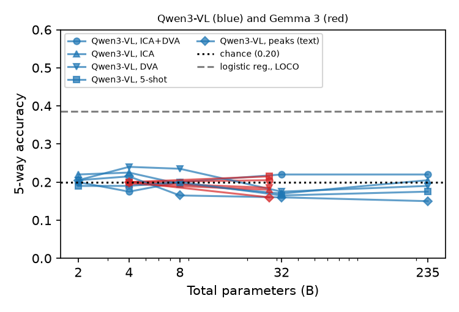

I ask AI to read battery plots. It guessed.
15 November 2026
My hunch. Battery experts diagnose ageing by looking at the peaks in two curves, the incremental capacity and the differential voltage. A peak that shrinks or slides points to a specific kind of damage, and thousands of papers describe exactly these signatures. Language models have read much of that literature. So I wondered, can a model connect the peaks it sees to what it has read, and infer the diagnosis?

Test. I made 200 labelled plots from published simulated data (eight chemistries, five kinds of damage) and showed them to seven open models, from 2 to 235 billion parameters. To separate seeing from knowing, I also tried describing the peaks in words, giving worked examples, and shuffling the answer options. A check on 40 real cells followed.
Result. Accuracy was 0.15 to 0.25 where guessing gives 0.20, and it did not rise with model size. Describing the peaks in words, so no image reading was needed, did not help either. The models were not short of confidence: they reported 0.77 to 0.95 while being right about one time in five, and some gave the same answer on all 200 plots.

Takeaway. Whatever these models took in from the literature, it did not turn into reading the peaks. Knowing the words is not the same as reading the evidence. And a model that is wrong and sure is a hazard around batteries, which is why my diagnostic tool uses calibrated statistics for the numbers and says so when it can't tell.
Next. Does an AI agent notice when a battery-data question cannot be answered from the data, and can its confidence be calibrated enough to limit how often it acts wrongly? I'll write that up when it has something to say. The benchmark, code and outputs will be released with the preprint. There's a short summary on the main site, and I'd like to hear your thoughts.